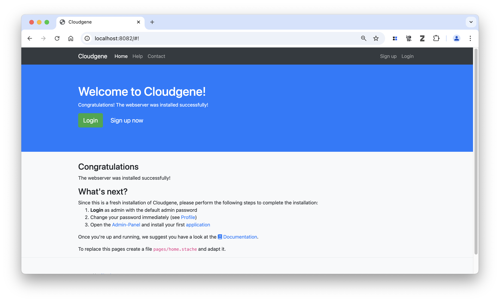
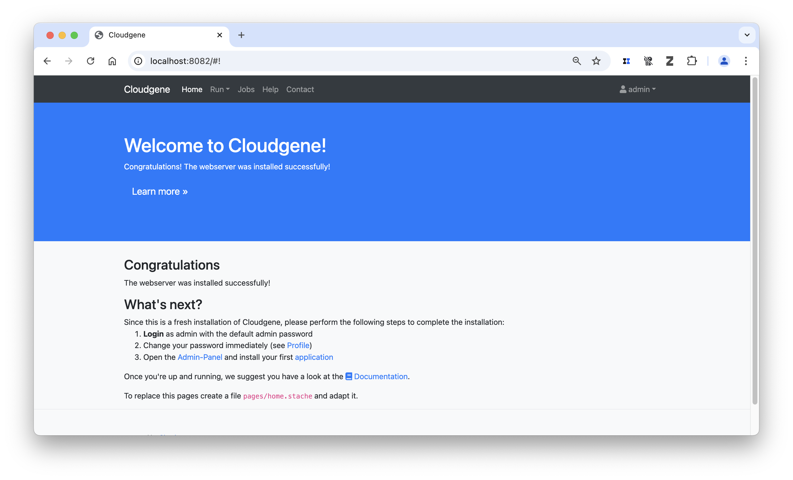
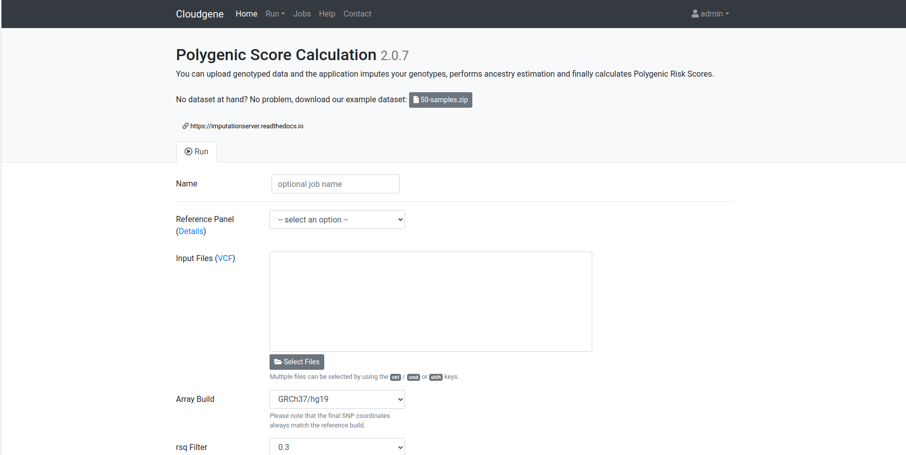
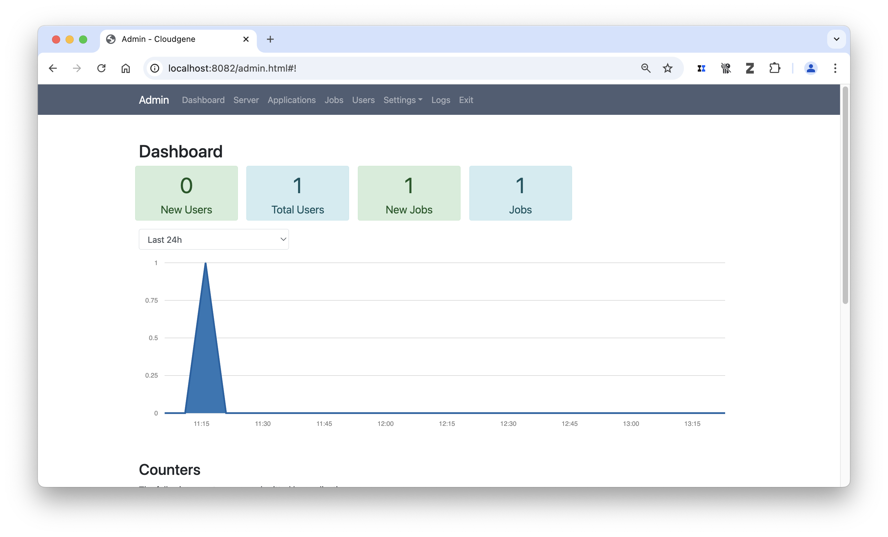
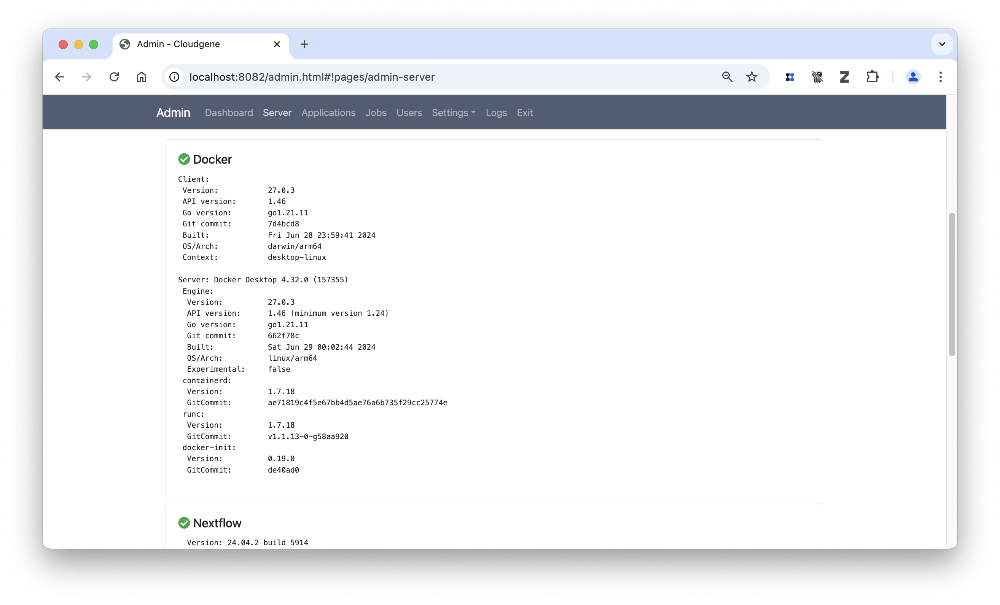
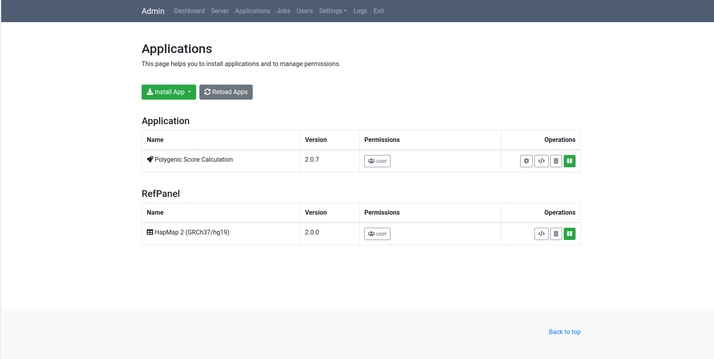
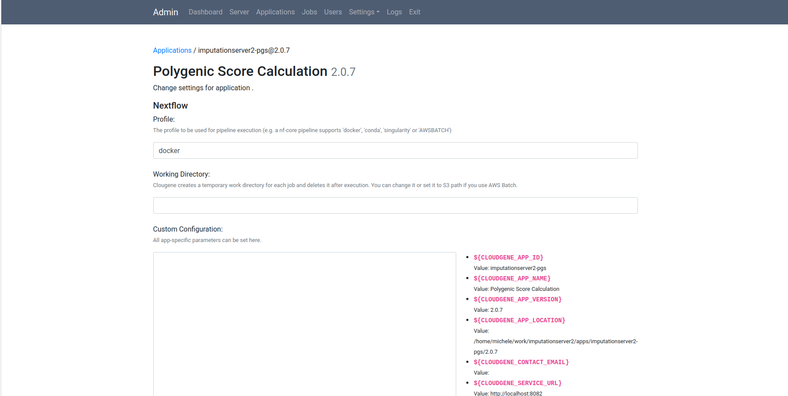
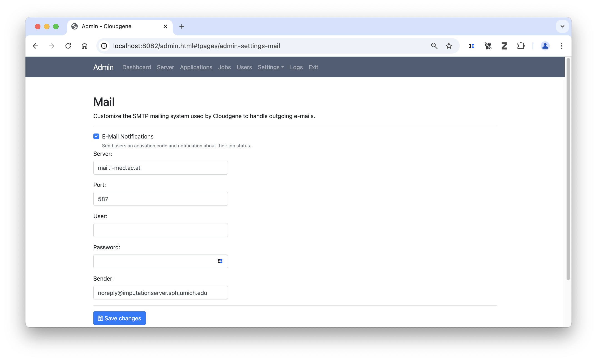
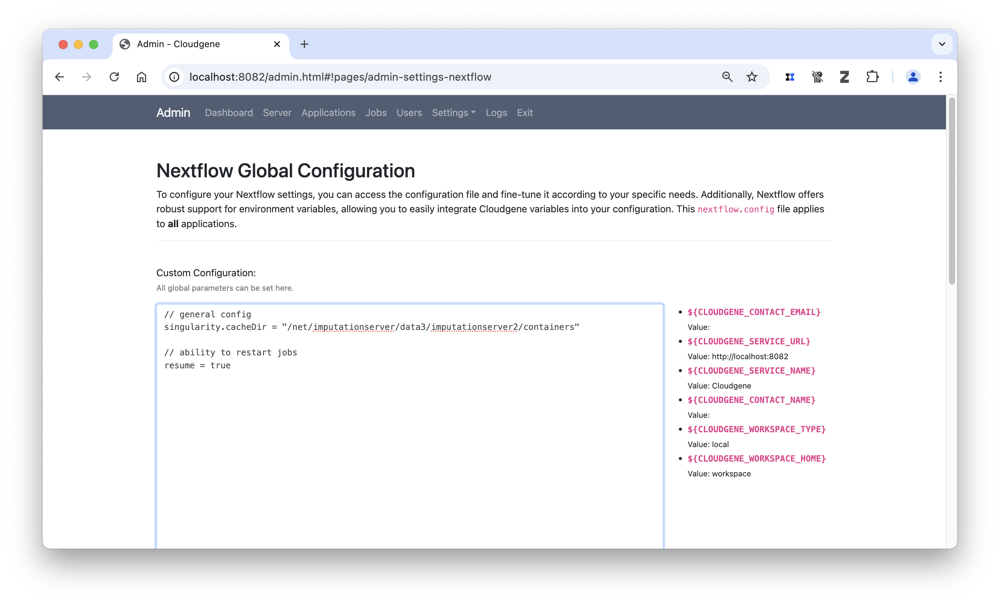

Setting up a local PGS server¶
Introduction¶
The Polygenic Score Calulation server allows the computation of polygenic risks based on imputed genotype and summary statistic, either provided locally or available through the PGS-catalog. For further details on the underlying pipeline, click here.
One of our primary goals is to enable others to set up their own PGS calculation server using our architecture. Such servers can then be utilized internally (e.g., within an institution to keep array or sequence data locally) or made accessible to external users, by providing sensitive reference panels to the community.
In this tutorial we show how to setup the latest PGS service locally by using already available reference panels.
Info
We are currently providing the HapMap2 panel and the 1000G Phase 3 Panel for download. The HRC panel is not publicly available.
Prerequistes¶
The following software is required to set up your own server. We specifically tested it on different Linux versions and on macOS.
- Java 17 or higher
- Nextflow
- Docker or Singularity
- MySQL Server (Optional)
Step by Step Guide¶
Step 1 - Create a local directory¶
The main installation directory contains all the necessary data to run a local instance of the imputation server. By default, it also stores all job results, the installed applications, and the database. All paths can be customized in the settings.yaml file at a later point. For now, please note that this directory can grow quite large.
Info
In a Slurm setup, make sure this directory is located on a shared drive that is accessible by all nodes.
Step 2 - Install Cloudgene¶
Cloudgene 3 offers a platform that converts Nextflow pipelines into scalable web services with just a few steps. More details are available in our preprint and recent blog post.
To install Cloudgene 3, run the following command:
If the last command successfully returns the currently installed version, everything is set up correctly.
Step 3 - Install the PGS calc server pipeline, PGS catalog and reference panel¶
In Cloudgene 3, everything is considered as an app. This means that both the PGS calculation server pipeline, the PGS catalog and the reference panels can be installed through Cloudgene. Apps can be installed either via the graphical interface or the command line. In this case, we will install the latest version of our PGS-calc from the local repository, and the Hapmap2 panel and PGS catalog from an HTTP address.
# Install PGS pipeline
./cloudgene install genepi/imputationserver2/cloudgene.pgs.yaml
# Install reference panel
./cloudgene install https://imputationserver.sph.umich.edu/resources/ref-panels/imputationserver2-hapmap2.zip
# Install PGS catalog including a subset of scores
./cloudgene install https://imputationserver.sph.umich.edu/resources/pgs-catalog/pgs-catalog-small.zip
Note
-
If you want to install the large 1000 Genomes Phase 3 reference panel (hg19) instead, use https://imputationserver.sph.umich.edu/resources/ref-panels/imputationserver2-1000genomes-phase3-public.zip. Similarly, you can choose different PGS catalogs too.
-
You can also download the resources first and then install it using the full path.
Since we have now installed all the required apps, we will refer to the installation as the imputation server, even though technically it is a Cloudgene instance.
Step 4 - Start your local PGS server¶
The local web service can now be started. By default, it runs on port 8082.
You can now open a local web browser and navigate to http://localhost:8082. This will display the default landing page, which can be customized later.Tip
For server usage, run ./cloudgene server & to run it in the background when everything has been set up. To persist the job after logging out from a remote session, use the screen commandline tool available for Linux and MacOS or use the nohup option.

Step 5 - Login and Run your first workflow¶
You can now log in using the default credentials (username: admin, password: admin1978). The interface will change slightly, with the Run tab becoming available.

By clicking on the Run tab, you should see the imputation server workflow, just as you would in the Michigan Imputation Server.

This provides a basic setup for your local server and should already allow you to run a job on your local instance!
Note
With the current setup, it's required that Docker is up and running. Check the interactive logs in case your job fails. If you want to run this with Slurm or Singulairy click here.
Tweak your instance (Basics)¶
Our architecture provides numerous customizable settings, accessible only to admin users. To modify them, click on the admin user and open the Admin Panel. The panel provides details about all users, jobs, and applications, and allows you to customize your instance through various settings.

1) Check server status¶
First, let's check the overall server status, which includes the currently applied setup.
Most importantly, check if Docker and Nextflow have been detected. For a local setup, you should see green checks for both.

Warning
The status of Singularity is currently not monitored by the instance.
2) Set Nextflow profile¶
Next, we need to specify the default Nextflow profile for the pipeline. For the pgs-calc server, Docker is already set as the default profile. However, for this tutorial, we will configure it explicitly. Click on Apps in the Admin Panel, then click on the gear icon.

Now, set the profile value to 'docker' and click Save Changes.

Note
Please note that we also provide other profiles, currently slurm or singularity.
3) Setting up a mail server¶
A mail server is required for user registration. You can configure it in the Admin Panel by navigating to Settings -> Mail. We recommend using a mail relay. If you set a password, please note that it will be stored in plain text in the settings.yaml file.

4) Setting up Nextflow mail support¶
The Nextflow pipeline is one of the two key components of the pgs-calc server. To adjust its settings, go to Admin Panel -> Settings -> Nextflow. Any configurations specified here will be applied to all apps. Alternatively, you can define app-specific Nextflow configurations by selecting Apps and clicking on the gear icon for a specific app.
The first setting you can customize is the mail configuration for sending notifications from the pipeline. Copy the following snippet to use the mail server configuration and apply it to your Nextflow pipeline.
params.send_mail=true
mail {
from = "${CLOUDGENE_SMTP_NAME}"
smtp.host = "${CLOUDGENE_SMTP_HOST}"
smtp.port = "${CLOUDGENE_SMTP_PORT}"
}
Set parameters¶
The pgs-calc Server pipeline offers a comprehensive set of parameters. To customize these parameters, add them to the Nextflow section. The following snippet demonstrates how to modify specific parameters:
Tweak your instance (Advanced)¶
The Michigan Imputation Server operates on a Slurm cluster, which requires additional configuration. This section includes the required adjustments for HPC usage.
Note
Our pipeline provides a Slurm profile, which should be specified instead of Docker or Singularity. If you require a different executor, feel free to submit a pull request.
Resume jobs¶
In case your server stops unexpectedly, jobs can be restarted via the web server by admin users (Admin Panel -> Jobs). To also utilize Nextflow's capability to restart jobs, this feature needs to be enabled.

Set singularity location¶
As mentioned earlier, singularity or slurm can be set for each app in the profile field. Additionally, we recommend specifying the location of the singularity image to prevent multiple downloads.
Slurm specific setup¶
Running it as a service for the community requires a well-configured Slurm cluster. If you plan to provide this as a service, we recommend setting up queues to optimize job wall time and using a scratch directory for large jobs. Specifying a scratch directory allows Nextflow to run large jobs on, for example, a faster SSD drive instead of using the distributed file system. The queues must be available on your Slurm cluster. Additionally, you can adjust the number of CPUs and the amount of RAM assigned to each task. Add the following to your Nextflow settings.
process {
// use local HDD on each node
scratch = '/data/nextflow-scratch'
// default queue
queue = 'pgs-calc-server'
withLabel: preprocessing {
queue = 'mis-preprocessing'
}
withLabel: postprocessing {
queue = 'mis-postprocessing'
}
withLabel: phasing {
queue = 'mis-phasing'
}
withName: 'CALCULATE_CHUNKS' {
cpus = { 1 }
memory = { 12.GB * task.attempt }
}
withName: 'MERGE_CHUNK_SCORES' {
cpus = { 2 }
memory = { 12.GB * task.attempt }
}
withName: 'MERGE_CHUNK_INFOS' {
cpus = { 2 }
memory = { 12.GB * task.attempt }
}
withName: 'CREATE_HTML_REPORT' {
cpus = { 1 }
memory = { 24.GB * task.attempt }
}
}
Web Service Settings¶
As mentioned earlier, the settings.yaml file includes all settings from the web service itself. We recommend the following adjustments if you plan to scale it up for larger usage:
1) Set up a MySQL database to store all user and job information (by default, an H2 database is used).
2) Configure the workspace for output files.The output folder for job results can be specified. We recommend placing it on a large HDD for better storage capacity.
3) Modiy the default web service configuration
We recommend setting the following configuration options. For more details on available options, please refer to the documentation here.
threadsQueue: 30
uploadLimit: 15000
maxDownloads: 50
autoRetire: true
autoRetireInterval: 4
maxRunningJobsPerUser: 3
4) Adapt the landing page.
To achieve the same look and feel as the Michigan Imputation Server, copy the pages folder to the main directory of your installation.
Summary¶
Cloudgene 3, in combination with our new Nextflow pipeline, transforms how imputation can be performed in the future. Please contact Lukas Forer and Sebastian Schönherr to learn more about how this can support your use cases!